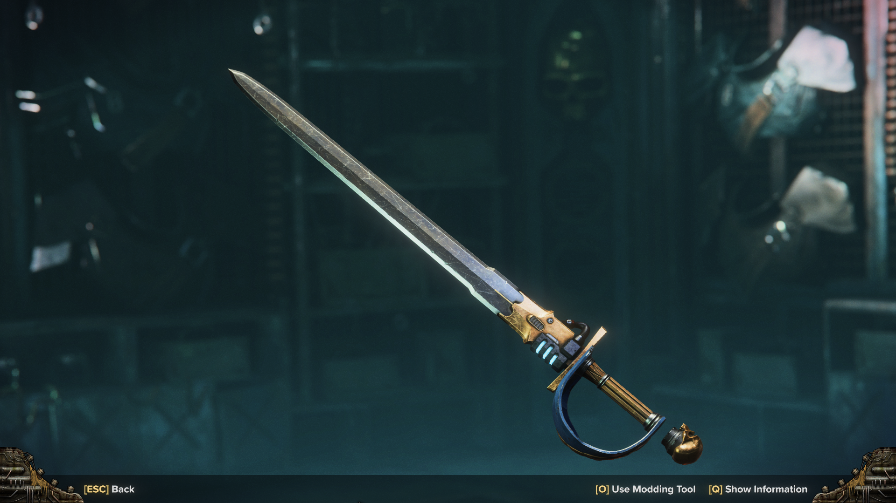
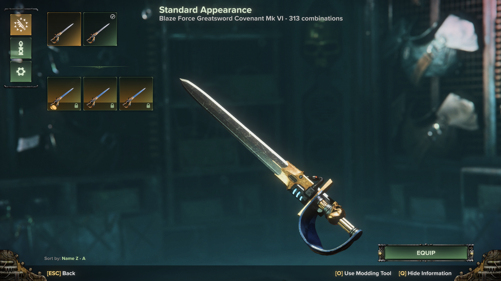
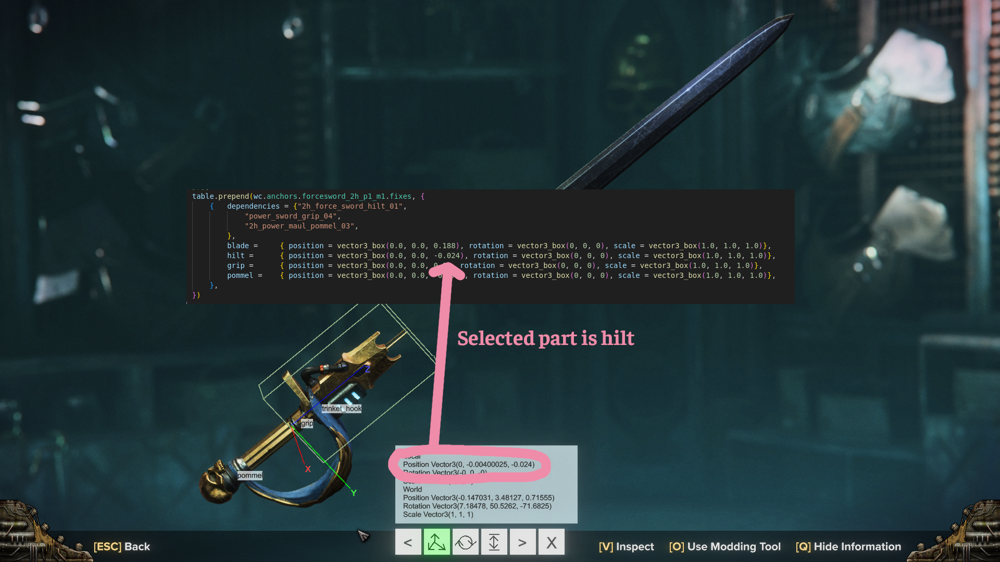
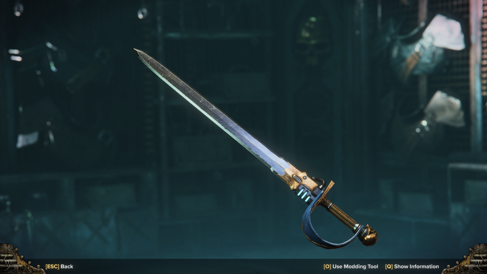

This is a walkthrough on how to make edits to parts from the Extended Weapon Customization (EWC) mod and any of its plugins for Warhammer 40,000: Darktide. I'm assuming you have a cursory knowledge of filesystems and are comfortable with installing mods for Darktide.
Requirements
Any text editor, preferably one with syntax highlighting. Notepad will work in a pinch, but programs such as Notepad++ or Visual Studio Code are much more powerful.
Modding Tools utility. This adds a menu that lets you move each attachment and see the changes live.
Note that the Nexus version has a bug that will make you crash when you reload mods, which is fixed in the versions uploaded to the Modding Tools thread in the Darktide Modders Discord. Why is it not on Nexus? I don't know.
I have a quick demo video for using it.
The weapon_customization_plugin template. Grasmann left a lot of notes in this plugin explaining what flags exist for making parts.
Even if you don't read this, it's needed for one of the methods for injecting fixes.
I'll let you go through this yourself, but the tl;dr is that each attachment has an id you give it and a mesh/model taken from the game, and equipping an attachment in a slot in the customization menu causes the mod to search for injected fixes that match the ids of any equipped attachment, which affects how the attachment looks. To get it, join the Darktide Modders Discord, go to the #weapon-customization-mod channel, and scroll way back to the pinned message containing the template archive.
[Optional] Go to Mod Options --> Darktide Mod Framework --> Enable Developer Mode. This will let you reload mods (and see your fixes) without having to close the game. By default, you reload mods using Ctrl + Shift + R.
Walkthrough
Here's a specific example. I equipped this combination of parts on a Force Greatsword, and there's a big gap at the bottom.

This does not spark joy! To fix it, I need to change the position values for the pommel. While I'm at it, I might as well move the hilt down a bit.
Injecting Fixes
After fixes get injected, the mod searches for the first one that matches (from top down). The base mod and plugins will have their own fixes injected, but these are typically written for broad, generic cases. You could create your own fixes, and there's two options for where to keep them:
Directly in one of the plugins
In your own fixes-only plugin
I would ONLY put the fixes in one of the plugins if it's a simple, one-time thing and you're willing to risk losing it (if you forget to transfer it over after the plugin gets updated). You can quickly make a custom plugin using the template; I'll elaborate in this collapsed section. In my example screenshots, I'll be doing it through a separate plugin, but the general idea is the same.
Easiest way to do this is to copy over the template and strip it. Install the template as if it was a mod, then descend into the folders. Delete the copy.cmd script since you don't need that.
Delete EVERYTHING inside the "Inject attachment definitions" and "Inject attachment models" sections. Feel free to delete the comments (lines beginning with --) for "Inject attachment fixes" but that could be handy to reference later. Delete the "Inject sight" segment, but make sure you DON'T delete the ends.
Feel free to change the name, but keep in mind that you'll need to rename the folders, the .mod and .lua files, and any mentions of the name within those files.
Add this to your load order and launch the game to make sure it still works. If you get something like a "69 func: nil" error, you deleted too much and have a syntax error (messed up code formatting).
I put this file below the main plugin but above the other plugins. It needs to be below the main plugin so that can create its anchor tables (which you're injecting into) first.
You don't have to go this far, but here's is my ultra stripped version with some personal edits.
First I did all the things I mentioned above, except I also cleared out the inject fixes section. I also cleared out the comments at the top. Then, I modified the if statement so it exits the program if you're missing requirements. This means fixes are injected OUTSIDE the if then ... end stucture, so between the two ends.
In the regular template, you inject fixes INSIDE the if then end, so before the two ends, because it does the opposite: only execute this code if the requirement is met.
Alright, now that you have a place to put the fixes, you need to actually make them. This starts with finding out which combination of parts you're using, then getting the attachment_id for each. Here's the customization options I chose for that Force Greatsword; I'm interested in the grip, pommel, and hilt.
Finding attachment_ids
The first step is figuring out which plugin the attachment came from and making note of it the attachment name.
Generally, the position on the list will tell you which one it's from. It goes base mod --> plugins, in reverse load order for the plugins.
E.g. if you're using Syn's Edits and the MT plugin, the first options will be from the base mod, then there's the options from the MT plugin, then the options from Syn's plugin. This is because Syn's Edits comes before the MT plugin in the load order.
Some plugins, namely the MT plugin, will have an indicator at the start of the name to clearly distinguish it.
Now that you know the attachment name and which plugin it's from, you can find the attachment_id. Within each plugin, the displayed name and attachment_id are kept in the same place.
For the base mod, this is either in the common files in <Darktide Mods>/weapon_customization/scripts/mods/weapon_customization/weapon_attachments or deeper, within the individual weapon files in functions/. Note that the weapon names are the names based on the code. You'll also see individual weapon files in the first folder I mentioned; that's where fixes from the base mod are stored.
For the MT plugin, these are in <Darktide Mods>/weapon_customization_mt_stuff/common/melee.lua and <Darktide Mods>/weapon_customization_mt_stuff/common/ranged.lua. Other plugins based on this will have a similar structure.
You could also just use some search methods. These are much easier and faster, but I'll still go through the steps of doing it manually to be thorough.
The easiest way is to search through VS Code. Drag the folder you want to search into VS Code, then open the search bar by clicking the magnifying glass on the left.
Here's me searching all the files by using the command line (on Linux). grep searches for things in files, the R flag means search files within folders, and the n flag means it'll print the line number too. For a Windows equivalent, search the Internet I guess.
Going back to my example, I will start with finding the grip. I see that the name is "Power Sword 4" and it's a base mod attachment, so I'll go look in the weapon_customization mod folder. I go to <Darktide Mods>/weapon_customization/scripts/mods/weapon_customization/weapon_attachments and see common_melee.lua.
Now I'll do a quick search.
Ah! "power_sword_grip_04" I'll make a note of that. Now that you have an idea of how it works, I'll find the rest of them in this spoiler:
Doing the same for the hilt, I find that it's "2h_force_sword_hilt_01".
I didn't see the pommel in this file, so I'll check the individual weapon file. I didn't find it, but I did find this:
Ok, that means it was in common_melee.lua, just not directly. I'll go back and look deeper.
This part means that the common melee pommels includes all the pommels from the pommel_attachments table in each of these base files. Based on the names, the ones I've boxed are the most likely candidates. Therefore, I'll visit <Darktide Mods>/weapon_customization/scripts/mods/weapon_customization/weapon_attachments/functions/ and search through each suspect.
Going through them all, turns out it's in the Crusher file, and it's called "2h_power_maul_pommel_03".
By now, you have the attachment_ids for all the relevant parts. You can now start actually making fixes.
Creating and Injecting Fixes
Within the weapon_customization_plugin template, you can find an example injection.
Each weapon will require its own block (the square selection I made). Replace the weapon name, with the relevant weapon, then in the dependencies, put the relevant attachments. The rules for specifying dependencies are as follows:
Separation by a comma ,outside quotes means AND
Having an exclamation mark ! at the start inside quotes means NOT
Being separated by a pipe | inside quotes means OR
Going back to the image, you can see that the first example means "Apply these rail fixes if using 'auto_pistol_sight_01' AND NOT 'receiver_01'"
My Force Greatsword was using "power_sword_grip_04" AND "2h_force_sword_hilt_01" AND "2h_power_maul_pommel_03", so that's what I'll put in the dependencies. Putting them on separate lines instead of one line doesn't matter. What does matter is that they're in quotes and separated by commas.
If you're piggybacking off of an existing plugin, copy over the fixes WITHOUT the table.prepend stuff. Here is an example with the MT Plugin (and it's in the Devil's Claw Sword file but shush)
I've also initialized the fixes with some default values. It's actually best if you don't use 0 for everything, but I'll do it this way to show why. Here's the (good) code for easy copy pasting: { position = vector3_box(0.0, 0.0, 0.01), rotation = vector3_box(0, 0, 0), scale = vector3_box(1.0, 1.0, 1.0) },
Alright, so how do you actually find out the values to put? If you're crazy, you could find the original fix values then calculate the effects of each change purely through your mind. I don't know about you, but I am not built like that. For us mere mortals, this is where Modding Tools comes in.
Anyways, go back into the game and get to work. Open the cosmetics menu for your weapon, then press the button to Use Modding Tool. You can see it at the bottom of the screen. By default, it's the 'o' button.

That looks even worse with zeroed out values, but that will soon change. Click on one of the pieces and start moving it around by dragging the axis arrows in a direction. Make note of the numbers that show up under Local. In this case, I'm interested in the numbers on the Position line.
That pommel looks much better! But wait! Why is there blob of options that I can't select properly? These are all parented to the same slot, so changes to the parent get inherited by the children. In this case, the blade, hilt, and pommel are all parented to the grip. This is why it's best to make the default values not just zeros throughout.
You can't move the hilt if you can't click on it. So go back to the injected fixes, then change the position for the hilt by some arbitrary value (as an example, I made its position (0.0, 0.2, 0.0), though (0.0, 0.0, 0.01) is less likely to go off screen).
Go back to the game, close the inventory, reload mods (or restart the game), then reopen the cosmetics menu.
...Even uglier but now I can actually click things! Plus, now I know the blade is actually parented to the hilt, not the grip as I assumed (this is defined close to where you find the attachment_id but I didn't check since I was going to use Modding Tools anyways). I'll get that out of the way, then move the hilt to where I want it. Once it looks right, I'll copy over the values to the plugin. Do this for all relevant parts (don't worry, I moved the blade back down).

Now close the inventory, reload or restart, and come back.

Yippee!!! I'm gonna make some more minor edits, but you get the gist by now. Astute readers may have noticed that I have edited the blade even though I didn't put any dependencies for blade. This means I'm changing every blade, as long as the pommel/hilt/grip group is equipped. It's fine in this case, but you may find yourself having to redo the fixes if another blade comes out.
And this is the final product. I also made an edit to a Combat Blade. Note how each weapon requires a separate table.prepend section. If you want to make an edit for a different combination of parts for the same weapon, make another dependencies block and keep it inside the same weapon's table.prepend section, separated by a comma.
Aligning Sights
Aligning sights works the same way, but the slot name for the fixes is different. Instead of saying sight = postion xyz, you would use scope_offset = position xyz or no_scope_offset = position xyz. You don't need to know the difference; you can just have both and copy over the values, or use trial and error. From now on, I'll refer to both simply as 'scope offsets'. If you want to know:
Forget this section. I found too many exceptions that I don't even know anymore lol. Most things just use scope_offset
---------
Which one you use depends on if the sight is technically classified as a scope by the plugin. This is determined by if the attachment's primary part is present in the scopes and if the attachment is in the sights tables from the base mod. This tells the base mod to apply scope effects, such as making lenses disappear and adding zoom.
For attachments that are in wc.sights, you would use scope_offset.
While the transformations follow the same format, it's a little unintuitive at first. The scope_offset transformations still apply to the weapon itself, not the point of aim. The actual point of aim stays in the middle of your screen; Crosshair Remap is useful as a point of reference.
So if the scope is too high, you need to make the gun down. This means pushing the Y position further negative.
Consult the following tables. Read it as "When you make the value for heading more positive, this happens to the gun." For example, look at the Position table. In the final column, that is Y. As you make Y positive, the gun moves up.
Position
x
z
y
+
Right
Forwards
Up
Rotation
y
x
z
+
?
Tip goes right
Tip goes up
To test this, I recommend reloading mods in the Psykhanium. The process generally goes like this:
Enter the Psykhanium
Aim down sights
Note how far off the point of aim is, then estimate a change (if the change needed is 0, stop this process)
Make the change in your fixes file
Reload mods
Open and close the inventory to refresh your weapon (to apply the new fixes you made)
Go back to Step 2
This way, you only have to wait for a loading screen once (until you inevitably crash due to memory leaks from constantly reloading)